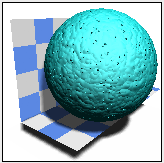
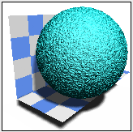
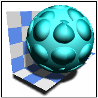
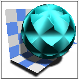
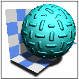
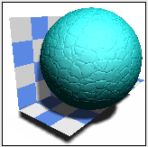
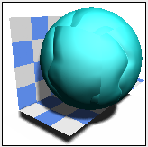

The options on this page let you control a material's bump mapping.
Bump mapping varies the surface normals to simulate bumps in the geometry.
|
Option |
Description |
|---|---|
|
Type |
Specifies the type of bump mapping. |
|
 Cast (HQI only) type |
Creates an irregular casting pattern using various-sized bumps and depressions. You can modify the following parameters.
|
|
 Rough (HQI only) type |
Creates a rough random texture on the surface. In addition to the scale parameter, you can modify the following:
|
|
 Wrapped Dimple type |
Creates a regular dimple pattern. Displays as a grid of spheres that protrude from the surface. In addition to the scale parameter, you can modify the following:
|
|
 Wrapped Rough |
Creates a rough random texture on the surface that you can orient and stretch. You can modify the scale, rough amplitude, detail and sharpness parameters. |
|
Wrapped Image type |
Creates a bump map with an image file. You can modify the following parameters:
|
|
Wrapped Knurl type |
Creates diamond shaped bumps. In addition to scale and blend parameters, you can modify the following:
|
|
 Wrapped Tread type |
Creates a pattern of cylindrical bumps. In addition to scale and blend parameters, you can modify the following:
|
|
 Leather (HQI Only) type |
Creates the surface texture of leather using a solid displacement texture. The basic pattern is a series of cells of unit size which vary from square to irregular convex shape. In addition to scale and rough amplitude parameters, you can modify the following:
|
|
 Wrapped Leather type |
Creates the surface texture of leather. The basic pattern is a series of cells of unit size which vary from square to irregular convex shape. The Wrapped Leather parameters are the same as Leather (HQI Only) parameters. |